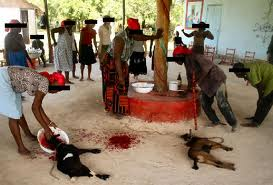

Histoire D'Haiti
Après de longues démarches et une longue traversée en mer, Christophe Colomb aborda enfin le 12 octobre 1492, soixante-dix jours après son départ de Palos en Espagne, l'une des îles Bahamas, Guanahani, qu'il appela San Salvador (Saint Sauveur) en souvenir sans doute des périls de sa traversée. Il découvrit Cuba le 26 octobre. Le 5 décembre, il jeta l'ancre au fond d'une baie qui, en l'honneur du saint du jour, fut dénommée baie de Saint-Nicolas. Il venait de découvrir ce qui, plus tard, sera appelé Haïti. Christophe Colomb baptisa cette terre, Hispaniola (« Petite Espagne »). À son deuxième voyage en 1493, il y fonda la première ville européenne du Nouveau Monde, baptisée La Isabela et s’y installa. Après avoir vaincu les cinq caciques qui dirigeaient le pays, les Espagnols soumirent les autochtones à des travaux forcés afin d'extraire l'or des mines. En moins de vingt-cinq ans, les populations indiennes furent décimées à cause de l’esclavage et des maladies importées par les conquérants. Le nouveau gouverneur Nicolás de Ovando tenta dès 1503 de faire venir des Noirs d'Afrique pour remplacer les autochtones. La majeure partie des esclaves noirs qui ont été déportés vers l'île sont originaires du Dahomey mais aussi de la Guinée et du Nigéria, ce qui explique l'importance du culte vaudou en Haïti (le culte vaudou est originaire du Dahomey et se pratique aussi au Nigéria). La traite fut autorisée en 1517 par Charles Quint, qui l'interdit officiellement quinze ans plus tard, avant même la lettre Veritas ipsa de Paul III. La ville du sud, Santo Domingo, devient le port de départ de la colonisation du Nouveau Monde. Les Espagnols importent en quantité des chevaux, bovins et porcins qu’ils laissent en liberté, ne s’intéressant qu’à l’or. Dès 1530, l'île commence à ne plus en rapporter. Les Espagnols concentrent leurs efforts dans la partie orientale de l'île qui recèle encore un peu d’or et abandonnent ensuite l’ouest.
Haïti (en forme longue république d’Haïti, en créole haïtien Ayiti et Repiblik Dayiti) est un pays des Grandes Antilles occupant le tiers occidental de l’île d'Hispaniola (soit 27 750 km2 environ), les deux tiers orientaux étant occupés par la République dominicaine. Sa capitale est Port-au-Prince et son point culminant est le pic la Selle (2 680 mètres d’altitude). La défaite de l'armée de Napoléon Bonaparte lors de la bataille de Vertières5 en 1803 est à l’origine de la création de la république d’Haïti, qui devient en 1804 la première République noire indépendante du monde. Haïti est aussi le seul territoire francophone indépendant des Caraïbes. Après avoir été une des premières destinations des Caraïbes dans les années 1950 à 1970 et avoir manqué la transition démocratique après la chute des Duvalier (François Duvalier, dit « Papa Doc », et son fils Jean-Claude Duvalier, dit « Baby Doc »), Haïti, surnommée « la Perle des Antilles » depuis l'époque coloniale, fait l'expérience d'une démocratie renaissante et tente de s’organiser et de se reconstruire après le violent séisme du 12 janvier 20106,7. Haïti est membre observateur et invité permanent de l'Alliance bolivarienne pour les Amériques (ALBA). En 2015, selon l'OMS, l'espérance de vie d'un Haïtien est de 63 ans (62 ans pour les hommes et 64 ans pour les femmes). En plus de son hymne national, La Dessalinienne, Haïti fait également usage de deux autres hymnes : Quand nos Aïeux brisèrent leurs entraves (ou Hymne présidentiel) et l'Hymne à la jeunesse (ou Fière Haïti).
Quel est l'ancien nom d'Haiti?
Le 1er janvier 1804 , en déclarant l'indépendance du pays, Dessalines lui redonne le nom taïno d'origine, « Haïti », en honneur à ce peuple amérindien. En créole haïtien, le pays est appelé Ayiti..
Culture Haitienne?
Peinture, sculpture, littérature, musique, langue créole… La culture haïtienne, sous toutes ses formes, est foisonnante et en grande partie marquée par l’imaginaire de la religion vaudou. 
La religion?
La grande majorité des Haïtiens pratique une religion puisque seulement 10,2 % de la population déclare n'être rattachée à aucune religion ou être athée.
Près de 55 % des Haïtiens sont catholiques selon (un certain nombre d'entre eux pratiquent parallèlement le vaudou).

La cuisine Haitienne?
Il est vrai que chez les Haïtiens l’on retrouve du piment sous plusieurs formes à presque toutes les tablées. Que ce soit du piment confit, de la pâte de piment ou du pikliz, il n'en reste pas moins que contrairement à la croyance des non avertis, la nourriture haïtienne n’est pas ...

Salade Haitienne?
C'est très bon de deguster...